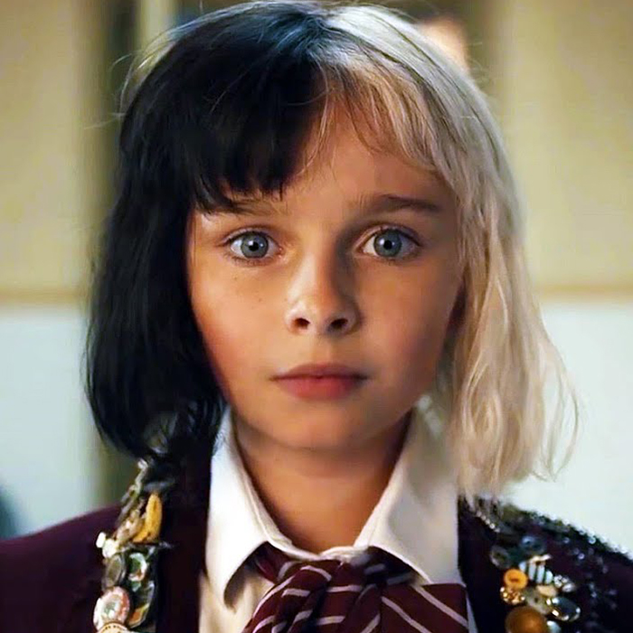
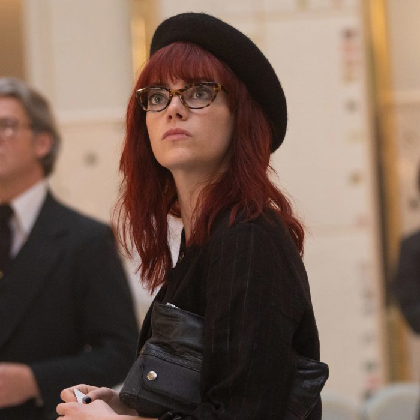
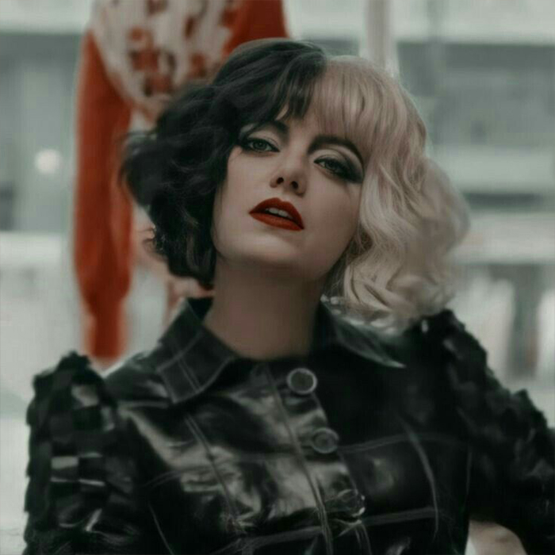
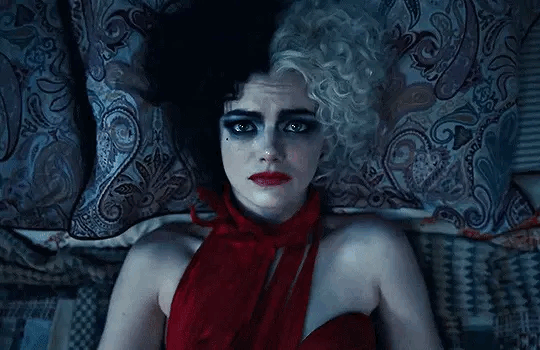

본문콘텐츠영역
Before she becomes Cruella de Vil, teenage Estella has a dream. She wishes to become a fashion designer, having been gifted with talent, innovation, and ambition all in equal measures. But life seems intent on making sure her dreams never come true. Having wound up penniless and orphaned in London at 12, 10 years later Estella runs wild through the city streets with her best friends and partners-in-(petty)-crime, Horace and Jasper, two amateur thieves. When a chance encounter vaults Estella into the world of the young rich and famous, however, she begins to question the existence she's built for herself in London and wonders whether she might, indeed, be destined for more after all. When an up-and-coming rock star commissions Estella to design him a signature piece, she begins to feel as though she has truly arrived. But what is the cost of keeping up with the fast crowd- and is it a price Estella is willing to pay? Written by Katie
- 
- 
- 
"
People do need a villain to believe in,
so I'm happy to fit the bill.
"

- 